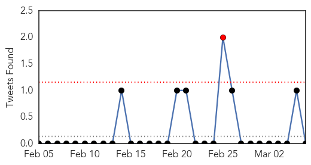
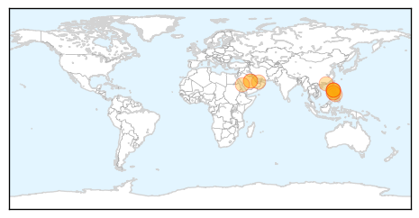
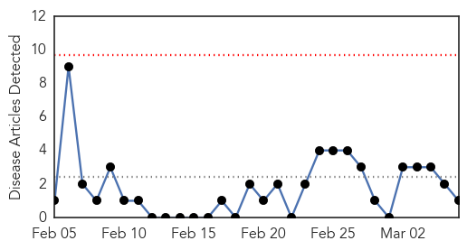

MERS
30-Day Web Trend
19 alerts, 3 warnings

30-Day Twitter Trend
12 alerts, 2 warnings

Article Locations
Article Confidences

Top Articles:
- 1.000
- Saudi Arabia reports 10 more MERS-linked deaths
- 1.000
- WHO Saudi MERS report notes exposures in health settings
- 0.999
- MERS kills 10 more in Saudi, health campaign broadened
- 0.999
- DH closely monitors 10 additional MERS cases in Saudi Arabia
- 0.998
- 3 Filipino female nurses have MERS virus
- 0.997
- 3 Filipino nurses working in Saudi Arabia infected with MERS-CoV
- 0.996
- Work linked to Filipino MERS cases in Saudi Arabia
- 0.989
- MERS-CoV downs 3 Pinoys in KSA
- 0.965
- Three Filipino health workers infected with MERS in Saudi Arabia
- 0.953
- 3 Filipino health workers infected with Mers in Saudi Arabia
- 0.920
- 3 Pinay nurses in Saudi Arabia have MERS-CoV
- 0.884
- DOH set to dispatch MERS-Cov mission to Saudi Arabia
Top Tweets:
- 0.711
- AFD Blog `Saudi MOH Reports 2 MERS Cases' MERS-CoV http://t.co/NAzLNYg035
- 0.667
- RT: AFD Blog `Saudi MOH Reports 2 MERS Cases' MERS-CoV http://t.co/NAzLNYg035
- 0.517
- AFD Blog `@WHO MERS Update – March 6th' MERS-CoV http://t.co/455wBqicEr
Chikungunya
30-Day Web Trend
0 alerts, 0 warnings

30-Day Twitter Trend
1 alerts, 0 warnings

Article Locations
Article Confidences

Top Articles:
Top Tweets:
-
No tweets found for Mar 06, 2015